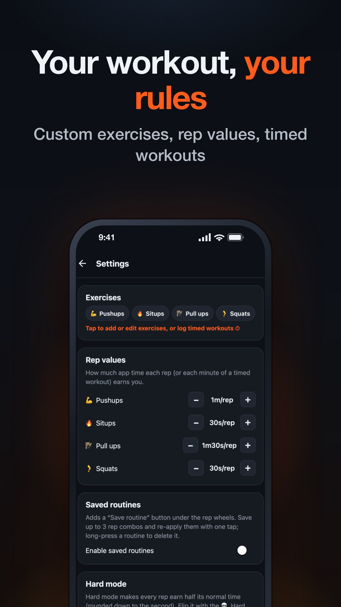

Block YouTube until you’ve earned it
YouTube is where a lot of us learn things: how to fix a bike, a talk you missed, a coding tutorial. That’s what makes it hard to block. Blocking TikTok is easy to justify. Blocking YouTube also blocks the useful half, so you make an exception, and then the exception becomes the habit.
That’s where an exercise-to-unlock blocker fits better than a hard block. You can always get in, but it costs you something.
Where YouTube pulls you in
- Autoplay and “Up next.” The video you meant to watch is often the first of five. The next one starts before you’ve decided anything.
- Shorts. It’s the same bottomless feed as TikTok, with its own tab in an app you opened for something else.
- The home feed. You open the app to search for one thing, and the recommendations reach you before the search bar does.
- It feels productive. Watching a documentary feels more worthwhile than scrolling, so it’s easier to justify another hour.
None of this means YouTube is bad. It means the session you intend and the session you actually have are usually very different lengths.
Lock YouTube on iPhone
- Open HonorFit, tap Grant Screen Time Access, and approve Apple’s prompt.
- Tap Choose Apps to Block › Open App Picker and tick YouTube. Tick the app itself, not a whole category, so you don’t accidentally block other apps you watch or listen with.
- Leave YouTube Music unticked if you want it free. It’s a separate app, so blocking YouTube doesn’t affect it.
Earned time on iPhone is metered by Apple’s Screen Time: the balance goes down only while YouTube is actually on screen. It keeps working even if HonorFit is closed.
Lock YouTube on Android
- Grant the two permissions on HonorFit’s Permissions required card: App usage access, so it can see which app is open, and Display over other apps, so it can draw the lock screen.
- Set battery usage to Unrestricted in Settings › Background reliability. This matters on phones from manufacturers that stop background apps aggressively.
- In Choose Apps to Block, search “YouTube” and tick it. The list shows every installed app, so you can see YouTube, YouTube Music, and YouTube Kids separately and pick only the one you mean.

A rate for long videos
This is where YouTube is different from other apps. A TikTok session is made of 15-second clips. A YouTube video can be 25 minutes long, so the rate you set has to cover a whole video, not just a few minutes of scrolling.
- Pull-ups are worth the most. By default, each one earns 90 seconds, so 10 pull-ups buy 15 minutes. If you have a bar in a doorway, this is the quickest way to earn time.
- You can mix exercises on the wheels. 10 pushups (10 minutes) plus 20 squats (10 minutes) gets you to 20 minutes in one submit.
- A free balance tops out at 20 minutes. That covers most tutorials. Blocking long documentaries isn’t really the point anyway. They’re the kind of thing you should sit down and choose to watch.
If long videos are a big part of what you watch, Pro fits YouTube better than it fits any other app. It removes the 20-minute cap, and it lets you log timed workouts. By default, an hour-long run or gym session earns 30 minutes. Trading one good workout for one good video seems like a fair deal.
Two YouTube-specific tips
- Close the app when you pause. HonorFit meters time while YouTube is on screen, and a paused video on screen still counts. Switch away and the clock stops.
- Search before you open the app. If you already know what you want to watch, search for it in your browser and open the result in YouTube. You skip the home feed completely, and your earned minutes go on the video you meant to watch.
HonorFit only covers your phone. YouTube on a TV or laptop, or in your phone’s browser, isn’t something it controls. If that’s where most of your watching happens, a phone blocker won’t fix it.
HonorFit Blocker locks YouTube until you earn watch time with pull-ups, pushups, situps or squats. Free on iPhone and Android. Honor system, no camera, and nothing leaves your phone.